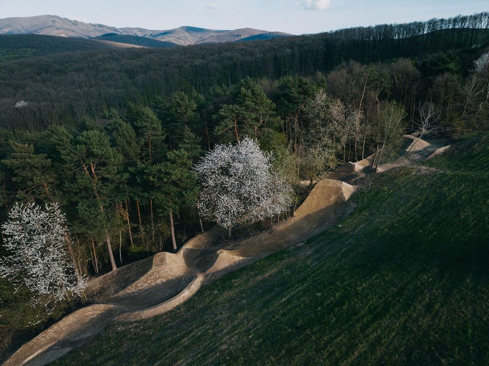
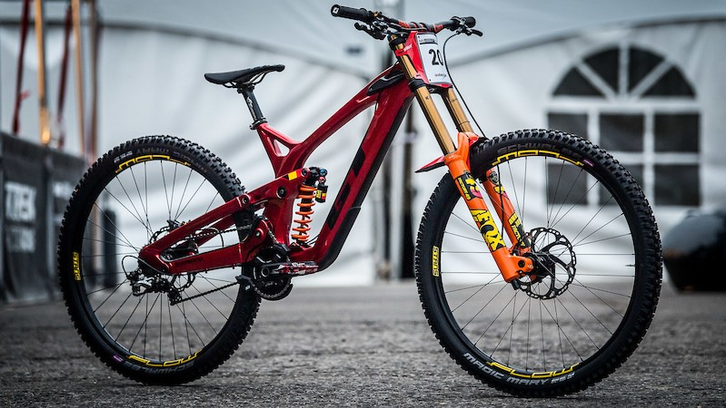
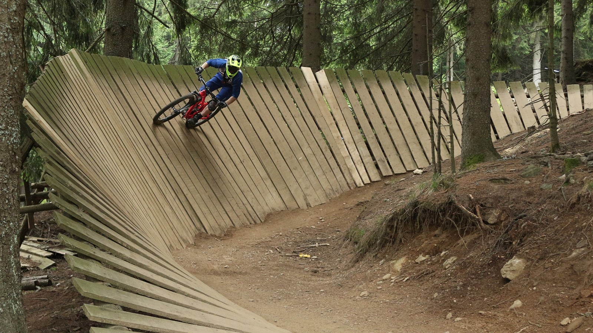

Traily


Co je bikepark
Rozdíl bikeparku oproti trailům je to že disponuje lanovkou. Většinou se bikeparky nacházejí ve skiareálech. Příklad bikeparku je třeba Bikepark Kopřivná.Jaké kolo do bikeparku?
Nejlepší kolo do bikeparku je downhillové kolo. Má velké odpružení takže sjezdy a skoky jsou díky tomu příjemnějsí. Do bikeparku se dá taky přijet na obyčejném kole, ale je asi jen otázkou času jak dlouho vás to bude bavit.

